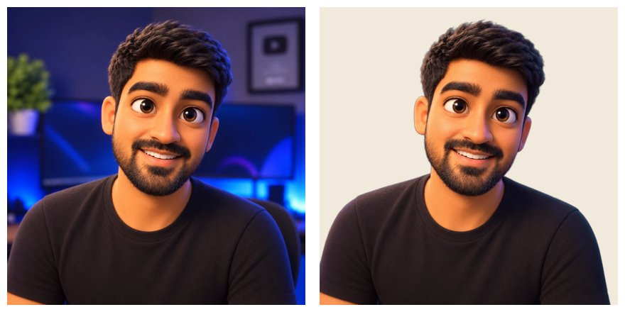
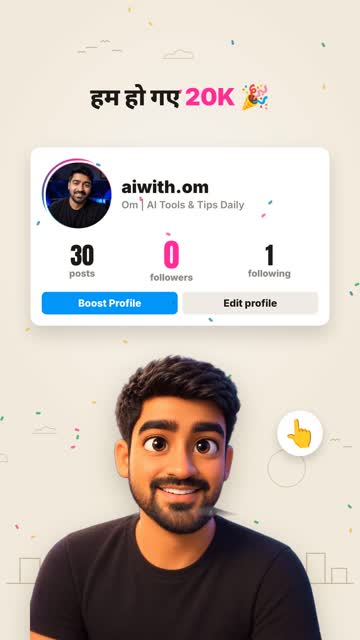

Apna AI avatar kaise banaye
Ek photo se bolta-chalta avatar: AI render, free background removal, aur Claude Code se saans, blink, gestures. Ye wahi tareeka hai jisse hamari 20K reel ka avatar bana. Asli haath aur lip sync ke optional steps bhi.
Ek photo → bolta hua avatar
Hamari 20K reel ka avatar aise bana: ek AI render, background hataya, aur code se use zinda kiya: saans, palak jhapakna, sar hilana, jump, aur gesture stickers. Haath ko code se "rig" nahi kiya: wo rubber jaisa dikhta hai.

| Level | Kya milta hai | Mehnat |
|---|---|---|
| 1 · Ek image (2.5D) | Saans, blink, sar tilt/nod, jump, gesture stickers | 30 min |
| 2 · Pose pack (6 images) | Asli haath: wave, haath upar, point, namaste… | +1 ghanta |
| 3 · Lip sync | Awaaz ke hisaab se munh hilta hai | +30 min |
Character banao (AI image tool)
Apni ek saaf, front-facing photo lo (achhi roshni, chehra seedha). Kisi bhi image generator mein (ChatGPT, Gemini, Midjourney…) photo attach karke:
Turn the attached photo into a 3D animated movie-style character portrait (Pixar-like): same face shape, skin tone, hair, beard and expression, friendly smile, big expressive eyes. Chest-up, facing the camera, head centred in the upper half, shoulders fully visible. Plain solid light-grey background, soft studio lighting, no props, no text, no hands in frame, mouth closed or slight smile. High resolution, square 1:1.
Background hatao (free, local)
pip install "rembg[cpu]"
rembg i -m birefnet-portrait avatar.png avatar_cut.png
birefnet-portrait baalon ke edges bhi saaf rakhta hai. Pehli baar ~1 GB model download hota hai.
Avatar ko zinda karo (Claude Code)
Apne Remotion project (ya hamare Reel Studio Kit) mein Claude Code kholo aur ye paste karo:
Animate my avatar cutout (public/avatar_cut.png) as a 2.5D puppet in this Remotion project. Do NOT rig arms or hands. 1. Split it into two layers: head (above the neck) and body, with a soft feathered seam so no line shows. 2. Body: gentle breathing (scale ~1%), small sway, and a "cheer" jump with a tiny squash on landing. 3. Head: pivot at the neck; slow sway, tilt toward whatever I point at, a single nod for "thank you". 4. Blink every ~3 seconds: draw eyelids over each eye, colour-matched to the skin on that side (sample the pixels), with a thin lash line. Find the eye positions yourself and show me a zoomed still to confirm. 5. Actions on a timeline: wave, cheer, point, present, namaste. For each, pop a round white emoji sticker next to the avatar (👋 🎉 👆 🙌 🙏). 6. Keep the avatar at the bottom of the frame, bleeding off the edge, never covering text cards. Render 6 stills across the timeline and check them yourself before the full render.
Asli haath chahiye? Pose pack
Ek grid mein 20 poses mangoge to generator aksar cells aur chehra bigaad deta hai. Isliye har pose alag image banao, same chat mein, character reference attach karke:
Same character as the attached image: identical face, hair, beard, outfit, lighting and camera framing (chest-up, head in the same position and size). Pose: [waving with right hand | both arms raised in celebration | pointing up with right index finger | hands together in namaste | both palms open presenting | arms relaxed]. Mouth closed. Hands must not cover the face. Plain solid light-grey background, square 1:1.
- 6 poses kaafi hain: idle, wave, celebrate, point, namaste, present.
- Har image ka background Step 2 se hatao.
- Claude ko bolo: "head ko har pose mein same jagah align karo, aur action timeline pe pose image switch karo (0.15s crossfade)".
Lip sync (optional, free)
Rhubarb Lip Sync (MIT) awaaz sunke batata hai kab kaunsa munh-shape. Hindi/Hinglish ke liye phonetic recognizer:
rhubarb -f json --recognizer phonetic -o mouth.json voice.wav
Phir Claude ko bolo: "mouth.json ke A–F shapes ke hisaab se avatar ke munh pe chhota mouth draw karo (band, thoda khula, khula, gol), skin aur lip colour match karke."
Ye rules follow karo
- Ek character = ek hi chat / reference. Style mix mat karo.
- Head ka size aur position har pose mein same.
- Haath kabhi chehra/munh na dhakein.
- Plain background → cutout saaf.
- Avatar ko text cards ke upar mat aane do: neeche rakho.
- Reel mein "AI avatar" likh do agar log asli insaan samajh sakte hain.

Idea credit: @techstackbro (freebie idea); method from our own 20K reel · Facts checked Nov 2026 from the official source. Tools badalte rehte hain, latest README zaroor dekho.